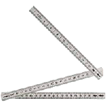
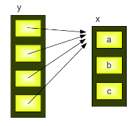

Sequential Data Types
Introduction
Sequences are one of the principal built-in data tpyes besides numerics, mappings, files, instances and exceptions. Python provides for six sequence (or sequential) data types:- strings
- byte sequences
- byte arrays
- lists
- tuples
- range objects
- The items or elements of strings, lists and tuples are ordered in a defined sequence
- The elements can be accessed via indices
>>> text = "Lists and Strings can be accessed via indices!" >>> print(text[0], text[10], text[-1]) L S ! >>>
Accessing lists:>>> l = ["London", "Paris", "Strasbourg", "Zurich"] >>> print(l[1], l[2]) Paris Strasbourg >>>
>>> countries = ["Germany","Switzerland","Austria","France","Belgium", "Netherlands", "England"] >>> len(countries) 7 >>> fib = [1,1,2,3,5,8,13,21,34,55] >>> len(fib) 10 >>>
Bytes
The bytes object is a sequence of small integers. The elements of a byte object are in the range 0 through 255, corresponding to ASCII characters and they are printed as such.Python Lists
So far we had already used some lists, but we haven't introduced them properly. Lists are related to arrays of programming languages like C, C++ or Java, but Python lists are by far more flexible and powerful than "classical" arrays. For example items in a list need not all have the same type. Furthermore lists can grow in a program run, while in C the size of an array has to be fixed at compile time.Generally speaking a list is an collection of objects. To be more precise: A list in Python is an ordered group of items or elements. It's important to notice, that these list elements don't have to be of the same type. It can be an arbitrary mixture of elements like numbers, strings, other lists and so on. The list type is essential for Python scripts and programs, this means, that you will hardly find any serious Python code without a list.
The main properties of Python lists:
- They are ordered
- The contain arbitrary objects
- Elements of a list can be accessed by an index
- They are arbitrarily nestable, i.e. they can contain other lists as sublists
- Variable size
- They mutable, i.e. they elements of a list can be changed
List Notation and Examples
List objects are enclosed by square brackets and separated by commas. The following table contains some examples of lists:| List | Description |
|---|---|
| [] | An empty list |
| [1,1,2,3,5,8] | A list of integers |
| [42, "What's the question?", 3.1415] | A list of mixed data tpyes |
| ["Stuttgart", "Freiburg", "München", "Nürnberg", "Würzburg", "Ulm","Friedrichshafen", Zürich", "Wien"] | A list of Strings |
| [["London","England", 7556900], ["Paris","France",2193031], ["Bern", "Switzerland", 123466]] | A nested list |
| ["High up", ["further down", ["and down", ["deep down", "the answer", 42]]]] | A deeply nested list |
Accessing List elements
Assigning a list to a variable:languages = ["Python", "C", "C++", "Java", "Perl"]There are different ways of accessing the elements of a list. Most probably the easiest way for C programmers will be through indices, i.e. the numbers of the lists are enumerated starting with 0:
>>> languages = ["Python", "C", "C++", "Java", "Perl"]
>>> print(languages[0] + " and " + languages[1] + " are quite different!")
Python and C are quite different!
>>> print("Accessing the last element of the list: " + languages[-1])
Accessing the last element of the list: Perl
>>>
The previous example of a list has been a list with elements of equal data types.
But as we had before, lists can have various data types. The next example shows this:
group = ["Bob", 23, "George", 72, "Myriam", 29]
Sublists
Lists can have sublists as elements. These Sublists may contain sublists as well, i.e. lists can be recursively constructed by sublist structures.>>> person = [["Marc","Mayer"],["17, Oxford Str", "12345","London"],"07876-7876"] >>> name = person[0] >>> print(name) ['Marc', 'Mayer'] >>> first_name = person[0][0] >>> print(first_name) Marc >>> last_name = person[0][1] >>> print(last_name) Mayer >>> address = person[1] >>> street = person[1][0] >>> print(street) 17, Oxford StrThe next example shows a more complex list with a deeply structured list:
>>> complex_list = [["a",["b",["c","x"]]]] >>> complex_list = [["a",["b",["c","x"]]],42] >>> complex_list[0][1] ['b', ['c', 'x']] >>> complex_list[0][1][1][0] 'c'
Tuples
A tuple is an immutable list, i.e. a tuple cannot be changed in any way once it has been created. A tuple is defined analogously to lists, except that the set of elements is enclosed in parentheses instead of square brackets. The rules for indices are the same as for lists. Once a tuple has been created, you can't add elements to a tuple or remove elements from a tuple.Where is the benefit of tuples?
- Tuples are faster than lists.
- If you know, that some data doesn't have to be changed, you should use tuples instead of lists, because this protect your data against accidental changes to these data.
- Tuples can be used as keys in dictionaries, while lists can't.
>>> t = ("tuples", "are", "immutable")
>>> t[0]
'tuples'
>>> t[0]="assignments to elements are not possible"
Traceback (most recent call last):
File "<stdin>", line 1, in <module>
TypeError: 'tuple' object does not support item assignment
Slicing
In many programming languages it can be quite tough to slice a part of a string and
even tougher, if you like to address a "subarray". Python make it very easy with its
slice operator. Slicing is often better known as substring or substr.
When you want to extract part of a string, or some part of a list, you use in Python
the slice operator. The syntax is simple. Actually it looks a little bit like accessing
a single element with an index, but instead of just one number we have more, separated
with a colon ":". We have a start and an end index, one or both of them may be missing.
It's best to study the mode of operation of slice by having a look at examples:
>>> str = "Python is great" >>> first_six = str[0:6] >>> first_six 'Python' >>> starting_at_five = str[5:] >>> starting_at_five 'n is great' >>> a_copy = str[:] >>> without_last_five = str[0:-5] >>> without_last_five 'Python is ' >>>Syntactically, there is no difference on lists:
>>> languages = ["Python", "C", "C++", "Java", "Perl"] >>> some_languages = languages[2:4] >>> some_languages ['C++', 'Java'] >>> without_perl = languages[0:-1] >>> without_perl ['Python', 'C', 'C++', 'Java'] >>>
Slicing works with three arguments as well. If the third argument is for example 3, only every third element of the list, string or tuple from the range of the first two arguments will be taken.
If s is a sequential data tpye, it works like this:
s[begin: end: step]The resulting sequence consists of the following elements:
s[begin], s[begin + 1 * step], ... s[begin + i * step] for all (begin + i * step) < end.In the following example we define a string and we print every third character of this string:
>>> str = "Python under Linux is great" >>> str[::3] 'Ph d n e'The following string, which looks like letter salad, contains two sentences. One of them contains covert advertising of my Python courses in Canada:
"TPoyrtohnotno ciosu rtshees lianr gTeosrto nCtiot yb yi nB oCdaennasdeao"Try to figure it out using slicing with the step argument. The solution is: You have to set step to 2
>>> s 'TPoyrtohnotno ciosu rtshees lianr gTeosrto nCtiot yb yi nB oCdaennasdeao' >>> s[::2] 'Toronto is the largest City in Canada' >>> s[1::2] 'Python courses in Toronto by Bodenseo' >>>You may be interested in how we created the string. You have to understand list comprehension to understand the following:
>>> s = "Toronto is the largest City in Canada" >>> t = "Python courses in Toronto by Bodenseo" >>> s = "".join(["".join(x) for x in zip(s,t)]) >>> s 'TPPyotyhrotno hcnooutrnsoe s ciino sTuo rrotnsthoe ebsy Bloidaennrs ego' >>>
Length
 The length of a sequence, i.e. a list, a string or a tuple, can be determined with the function len(). For strings it counts the number of characters and for lists or tuples the number of elements are counted, whereas a sublist counts as 1 element.
>>> txt = "Hello World" >>> len(txt) 11 >>> a = ["Swen", 45, 3.54, "Basel"] >>> len(a) 4
Concatenation of Sequences
Combining two sequences like strings or lists is as easy as adding two numbers. Even the operator sign is the same.The following example shows how to concatenate two strings into one:
>>> firstname = "Homer" >>> surname = "Simpson" >>> name = firstname + " " + surname >>> print(name) Homer Simpson >>>It's as simple for lists:
>>> colours1 = ["red", "green","blue"] >>> colours2 = ["black", "white"] >>> colours = colours1 + colours2 >>> print(colours) ['red', 'green', 'blue', 'black', 'white']The augmented assignment "+=" which is well known for arithmetic assignments work for sequences as well.
s += tis syntactically the same as:
s = s + tBut it is only syntactically the same. The implementation is different: In the first case the left side has to be evaluated only once. Augment assignments may be applied for mutable objects as an optimization.
Checking if an Element is Contained in List
It's easy to check, if an item is contained in a sequence. We can use the
"in" or the "not in" operator for this purpose.
The following example shows how this operator can be applied:
>>> abc = ["a","b","c","d","e"] >>> "a" in abc True >>> "a" not in abc False >>> "e" not in abc False >>> "f" not in abc True >>> str = "Python is easy!" >>> "y" in str True >>> "x" in str False >>>
Repetitions
So far we had a "+" operator for sequences. There is a "*" operator available as well.
Of course there is no "multiplication" between two sequences possible. "*" is defined
for a sequence and an integer, i.e. s * n or n * s.
It's a kind of abbreviation for an n-times concatenation, i.e.
str * 4is the same as
str + str + str + strFurther examples:
>>> 3 * "xyz-" 'xyz-xyz-xyz-' >>> "xyz-" * 3 'xyz-xyz-xyz-' >>> 3 * ["a","b","c"] ['a', 'b', 'c', 'a', 'b', 'c', 'a', 'b', 'c']The augmented assignment for "*" can be used as well:
s *= n is the same as s = s * n.
The Pitfalls of Repetitions
In our previous examples we applied the repetition operator on strings and flat lists. We can apply it to nested lists as well:>>> x = ["a","b","c"] >>> y = [x] * 4 >>> y [['a', 'b', 'c'], ['a', 'b', 'c'], ['a', 'b', 'c'], ['a', 'b', 'c']] >>> y[0][0] = "p" >>> y [['p', 'b', 'c'], ['p', 'b', 'c'], ['p', 'b', 'c'], ['p', 'b', 'c']] >>> This result is quite astonishing for beginners of Python programming. We have assigned a new value to the first element of the first sublist of y, i.e. y[0][0] and we have "automatically" changed the first elements of all the sublists in y, i.e. y[1][0], y[2][0], y[3][0]
The reason is, that the repetition operator "* 4" creates 4 references to the list x: and so it's clear that every element of y is changed, if we apply a new value to y[0][0].